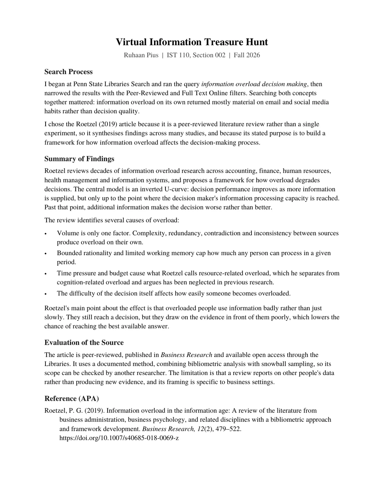

L01 Virtual information treasure hunt
The task
Use the Penn State Libraries to find a scholarly article on how information overload affects decision-making, then summarise it with an APA reference.
What I made
A one-page research summary. I searched Penn State Libraries for information overload decision making and filtered to peer-reviewed, full-text results. Searching the two ideas together mattered: on its own, information overload mostly turned up articles about email and social media habits.
I chose Roetzel (2019), a literature review in Business Research, because it pulls together decades of studies instead of reporting one experiment. Its central idea is an inverted U-curve: decisions get better as you add information, but only until you reach your capacity to process it. After that, more information makes the decision worse.

Download the original (PDF, 1 page, 4 KB)
Feedback
Great way of organizing your document! Very clear and easy to follow.
My instructor
Reflection
The search taught me as much as the article. Searching "information overload" on its own mostly returned pieces about email and social media habits. Only pairing it with "decision making" and filtering to peer-reviewed articles got me to Roetzel (2019).
His inverted U-curve stuck with me: more information helps a decision until you hit your limit, and after that it makes the decision worse. I see that most at school, where there is always more coming in than I can handle at once. My answer has been to build systems to track it all, often with AI helping. That is the core of information science too: finding information is easy, and judging and organising it is the hard part.